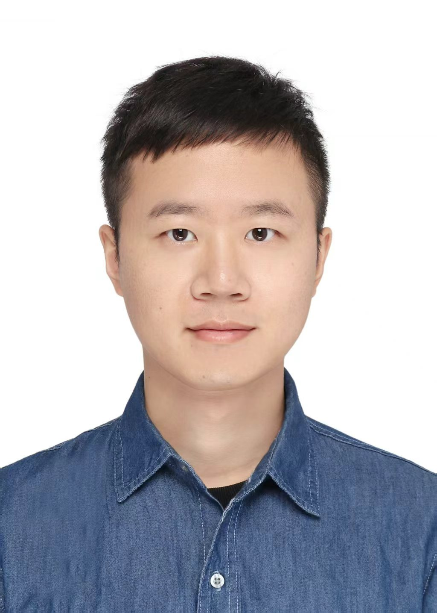
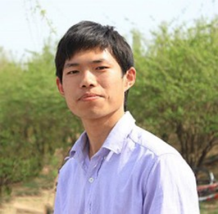

OPENING
Opening remarks
Ningyu Zhang · Zhejiang University
DAI 2026 · WORKSHOP PROGRAM
Explore the workshop schedule, keynote speakers, talk abstracts, and organizing chairs.
Explore the programTHE WORKSHOP
Five keynote talks and a panel discussion on AI scientists, agent systems, trustworthy discovery, long-horizon research, and creativity.
Meet the speakers01 / PROGRAM
All times are shown as listed in the workshop program.
Ningyu Zhang · Zhejiang University
Hong Kong University of Science and Technology
City University of Hong Kong
Harbin Institute of Technology (Shenzhen)
A short pause between sessions
The Hong Kong Polytechnic University
The Chinese University of Hong Kong, Shenzhen
Yi R. Fung, Xiang Zheng, Lianghao Xia, and Ninghao Liu
Ningyu Zhang · Zhejiang University
The closing time is reproduced as written in the source schedule.
02 / PEOPLE & IDEAS
Five talks on trust, verification, creativity, and the future of AI agents.
Hong Kong University of Science and Technology
Trustworthy Discovery: Sight and Citation in the Age of AI Scientists
Yi R. (May) Fung is an Assistant Professor at the Department of Computer Science and Engineering (CSE), Hong Kong University of Science and Technology (HKUST). She received her Ph.D. from the University of Illinois, after which she spent time visiting MIT as a postdoctoral researcher. May drives cutting-edge research in the domain of human-centric trustworthy AI/NLP model reasoning, with cognitively grounded scalable alignment principles and a focus on advancing multimodal knowledge robustness mechanisms. In particular, she has published over 50 papers at top-tier machine learning venues along the topics of MLLM agentic frameworks, retrieval-augmented generation, and multi-lingual cross-culture situation understanding for diverse real-world applications (e.g., software, healthcare, business, education, media communication). Her stellar research has received much recognition internationally, including the ACL’24 Outstanding Paper Award, NAACL’24 Outstanding Paper Award, and NAACL’21 Best Demo Paper Award. In addition, she serves on the Organizing Committee for ACL/EMNLP/IJCAI, and as Senior Area Chair for top ML/NLP conferences (e.g., ICML, ACL). She leads a young, energetic, and growing research lab, with a number of students awarded or nominated highly selective merit fellowships. Her work has been reported by various mainstream news outlets, including Forbes, TVB News, and The Paper.
Can an AI agent truly perform scientific research if it cannot read complex multi-modal web structures or back its claims with verified evidence? To advance AI agents from simple text summarizers to true research partners, we must endow them with both visual adaptability and unquestionable academic rigor. This keynote highlights two pivotal advancements toward this goal. We explore Webwatcher, an agent breaking new ground in vision-language deep research by visually navigating the web to synthesize complex multi-modal information. We then present CiteGuard, a framework addressing the existential issue of LLM hallucination in scholarly writing through strict, retrieval-augmented citation validation. Join us as we examine how sight and faithful attribution form the dual pillars of the next frontier in automated scientific discovery.
City University of Hong Kong
Towards Trustworthy Recursive Self-Improving Science Agents
Dr. Xiang Zheng is a Research Assistant Professor at the Hong Kong Institute of AI for Science (HKAI-Sci), City University of Hong Kong, and also works closely with Prof. Xingjun Ma at the Institute of Trustworthy Embodied AI, Fudan University. He received his Ph.D. from City University of Hong Kong in 2024 under the supervision of Prof. Cong Wang, his M.Sc. from Tsinghua University in 2019 (advised by Prof. Tao Zhang), and dual B.Sc. degrees from Beihang University in 2016, and is a recipient of the CityU Presidential PhD Scholarship. His research focuses on Reinforcement Learning, Trustworthy AI, Generative AI, and AI Agent systems, with particular interest in adversarial robustness evaluation, AI red teaming, and the safety and privacy of LLM-powered agent systems. His work has appeared in leading AI and cybersecurity venues, including NeurIPS, ICML, ICLR, CVPR, AAAI, IJCAI, DSN, IROS, RA-L, and CoRL.
As AI agents take on increasingly open-ended research tasks, they must learn from experience rather than solve each task in isolation. Recursive self-improvement offers a route to this continual learning, but the mechanisms that accumulate capabilities can also accumulate errors and risks. In this talk, we will examine what makes recursive self-improvement trustworthy, drawing on our recent work on autonomous exploration, agent safety, and skill evolution. We will discuss how exploratory behavior can uncover useful capabilities while also producing safety failures, how unsafe yet successful trajectories can become reusable skills, and how persistent state can shape behavior across tasks. We will then consider how to distinguish genuine capability gains from optimization for narrow metrics, and how constraints on exploration, verification, and state updates can help keep improvement reliable. We will conclude by introducing SciencePal 2.0 as a research-agent system in which these questions come together, and discuss the challenges of combining scientific creativity, continual learning, and reliability.

Faculty of Information Technology, Harbin Institute of Technology (Shenzhen)
Large Language Model Agents for Innovation and Creativity
Lianghao Xia is a Professor in the Faculty of Information Technology at Harbin Institute of Technology (Shenzhen). He previously served as a Research Assistant Professor at The University of Hong Kong. His research focuses on large language model agents and data mining. Thirteen of his papers have been selected among the most influential papers at major international conferences, and his work has received over 11,000 citations. He has received Best Paper nominations at ACM MM 2024, WWW 2023, and WSDM 2022, and a Tomorrow's Star nomination at the 2025 World Artificial Intelligence Conference. He has been named among AMiner AI 2000's most influential scholars and has appeared on Stanford University's global top 2% scientists list for three consecutive years.
Creative work takes place in open problem spaces: it starts with valuable ideas, turns them into actionable plans, and improves them as new evidence appears. How large language model agents can support this process is central to understanding their capacity for innovation and creativity. This talk presents a series of studies centered on scientific research, covering research ideation, experimental validation, and collaboration across research workflows. It explores how agents conduct exploratory research and how to assess their research capability and output quality. Drawing on examples from video creation, the talk discusses challenges shared across creative tasks, especially idea generation, task planning, and outcome evaluation. Together, these studies examine the capabilities and limits of large language model agents in supporting innovation and creativity.
The Hong Kong Polytechnic University
Scaling Verifiable Environments for Long-Horizon AI Agents
Dr. Ninghao Liu is an Assistant Professor in the Department of Computing at The Hong Kong Polytechnic University. Prior to that, he was an Assistant Professor at the University of Georgia. He received his Ph.D. from Texas A&M University in 2021. His research spans Explainable AI (XAI), Large Foundation Models, and Graph Mining. He has published papers at recognized venues such as ICML, KDD, ICLR, NeurIPS, ACL, WWW, etc. His work won the Distinguished Paper Award in AMIA 2024, Outstanding Paper Award in ICML 2022, the Best Paper Award Shortlist in WWW 2019. He also received the Google Research Scholar award in 2025.
Large language model (LLM) agents have demonstrated remarkable capabilities in solving short, well-defined tasks. However, extending these capabilities to complex, long-horizon workflows remains challenging. Such tasks require sustained planning, iterative execution, and reliable verification over hundreds of interactions. Meanwhile, the scarcity of high-quality, verifiable training environments limits further progress. In this talk, I will present our recent research on evaluating and improving long-horizon AI agents through scalable, verifiable environments. First, I will introduce Long-Horizon-Terminal-Bench, a benchmark that evaluates agents on complex terminal tasks using fine-grained verification and dense rewards. Second, I will discuss Recursive Synthetic Terminal Tasks, a framework that progressively synthesizes challenging tasks with executable solutions and reliable verifiers. Finally, I will present Software-in-the-Loop Reconstruction, which leverages existing scientific software to construct verifiable training tasks without manually authored reference solutions.

The Chinese University of Hong Kong, Shenzhen
Understanding LLM Internal Representations through Natural Language
Mengnan is an Assistant Professor and Presidential Young Fellow at the School of Artificial Intelligence of The Chinese University of Hong Kong, Shenzhen. He earned his Ph.D. in Computer Science from Texas A&M University. Before joining CUHK–SZ, he served as an Assistant Professor at the New Jersey Institute of Technology. His research primarily focuses on trustworthy large language models (LLMs). He has published over 120 papers with more than 13,000 Google Scholar citations. His contributions have been recognized with the Cisco Research Award, the NJIT Faculty Research Excellence Award, and inclusion in the Top 2% Scientist Worldwide list for 2024–2026 by Stanford University. He is deeply involved in the academic community, regularly serving as the Senior Area Chair for EMNLP and an Area Chair for conferences such as ICLR, NeurIPS, ICML, ACL, and AISTATS.
Understanding the internal representations of large language models (LLMs) is essential for improving their transparency, reliability, and alignment with human expectations. In this talk, I will present our recent research on interpreting LLM internal representations through natural language explanations. Specifically, I will introduce three approaches: (1) Rep2Text, which reconstructs input text from hidden representations; (2) Universal Activation Verbalizer (UAV), which enables natural language explanations of model activations across different LLMs; and (3) SAEExplainer, which generates and refines explanations of sparse autoencoder (SAE) features using mechanistic feedback. Together, these approaches explore how natural language can serve as an intuitive interface for understanding the internal mechanisms of LLMs, while highlighting the challenges and opportunities for developing more faithful and reliable explanations.
11:50—12:10 · MODERATED DISCUSSION
Yi R. Fung · Xiang Zheng · Lianghao Xia · Ninghao Liu
03 / ORGANIZING TEAM
The organizing team listed in the workshop program.
Zhejiang University
Southern University of Science and Technology
University of Science and Technology
Zhejiang University
Zhejiang University
NUS